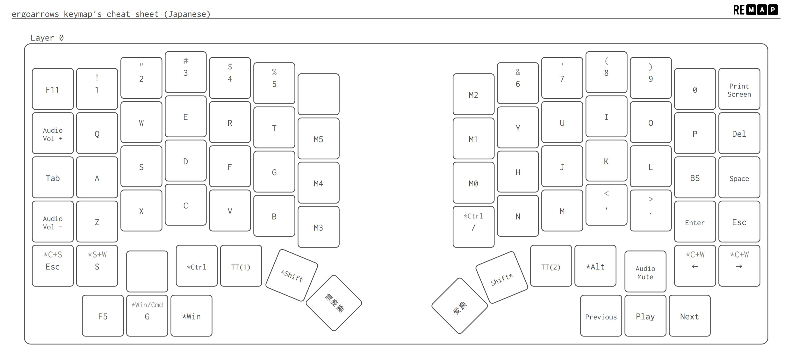
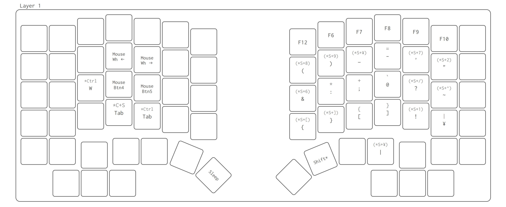
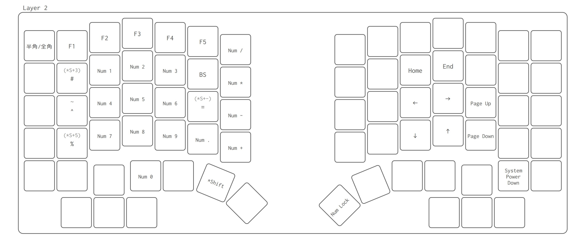
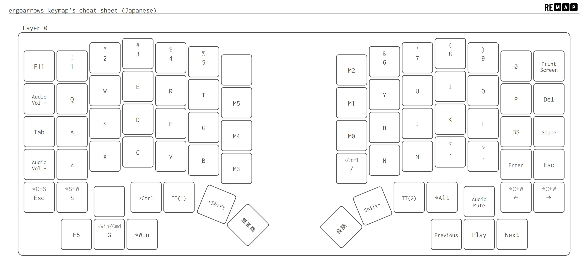
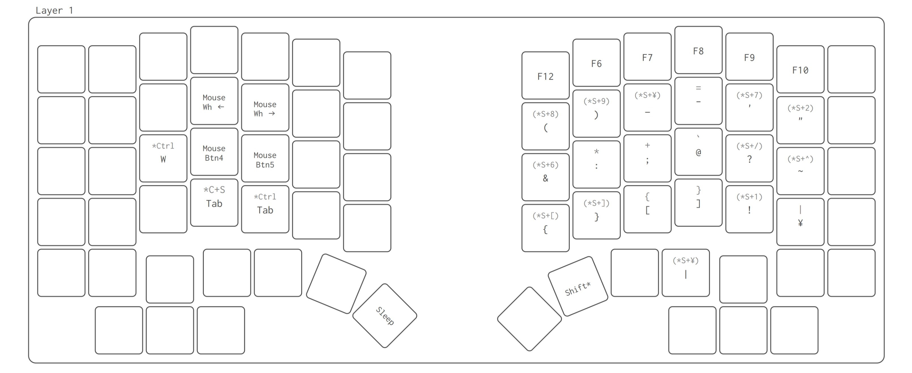
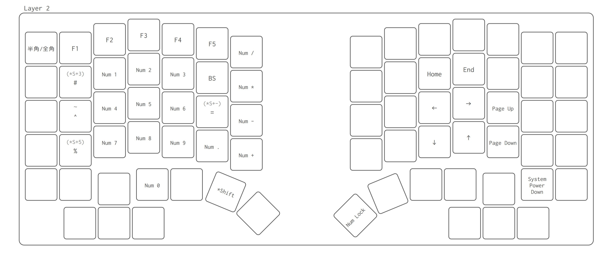

自作キーボード

自作キーボードの構成要素はざっくりまとめると下記の通り。
多くのキットではキースイッチやキーキャップは別売りとなっています。膨大なラインナップの中から、自分の好みのものを選んで買います。そのため、同じキットを組んでも人によって千差万別。世界に一つだけ、あなただけのキーボードを作ることができます。
作業はパーツの取り付けとはんだ付けが大半。単純作業の集合です。キットにはビルドガイドがあるので、ちゃんと読めば簡単に作れます！
まずはキーの配置。キットによって決まっていますが、どれも市販の完成品とは異なる配置です。
買うときに悩むのがパーツ選び。柔らかい押し心地のキースイッチにするか、逆にカチカチとした感触にするか…ってアレコレ悩みます。
組んだ後で試行錯誤するのがキーマップ。どのキーがどの機能かという割り当てです。これが自作キーボードの最大の利点。全てのキーを自由に設定できます。さらにキットによっては、レイヤー機能もあるのでキー数以上に多機能にすることができます。
逆にデメリットはと言うと、合計金額の高さと、薄型化が難しいことが挙げられます。自由度の高さに伴って、価格と筐体全高も高くなったということで。
キースイッチには大きく分けて3種類の打鍵感があります。滑らかで引っかかりの無いリニア軸、途中で抵抗感があるタクタイル軸、カチカチと鳴るクリッキー軸。一般的には軸と対応する色が決まっていて、赤軸はリニア、茶軸はタクタイル、青軸はクリッキーです。

ErgoArrowsでは横や隙間からKailh chocスイッチの側面が見えてしまいます。夏休み限定カラーとの親和性を考えて、青色のキースイッチにするこだわり。でも私はリニア軸が好きなので、青色だけどリニア軸という変わり種にしました！ 軸と色の対応は義務ではないので、違う色も沢山あります。

そんな色の親和性を完全に無視して、残りのキースイッチはOutemu Low profileスイッチの赤軸にしました。白いボディに赤軸、つまり紅白カラーなのでお正月にピッタリの縁起物です。Low Profileの名の通り、一般的なキースイッチより3mm背が低いCherry MX互換品です。この3mmの差がこだわりポイントなんですよ！

今回は限定カラーのプレートがキーの隙間から見えるようにしたいと思い、丸キーキャップにしました。外縁が銀色で、タイプライター風の見た目です。本製品は背が高いキーキャップで、無改造で取り付けるとOutemu LPキースイッチの利点を殺してしまいます。そのため、全てのキーキャップをノコギリでカットしました。68キー全部手作業です。これが一番時間がかかりました。

さらに打鍵時の音を軽減するためにシリコーンゴム製のOリングをキーキャップに付けました。打鍵音がわずかに低減したような気がする…かも。こうして普通に組むよりも手間暇をかけたので、より一層愛着が湧くMyキーボードになったと思います！

まずデフォルトで使用するレイヤ0はこんな感じ。今回は「手首の移動量を最小化すること」をテーマにキーマップを考えました。BackspaceとEnterを素早く押せるようにPキーの列に配置。余ったキーには思いつく限りのマクロやショートカットを割り当てました。空欄になっているキーは将来の機能拡張のための余地。TT(1)は押している間だけレイヤ1が作動します。

レイヤ1の左手側はブラウジングでの左手デバイスと位置付けています。タブ切り替えと、トラックボールに無い戻る/進むキーや左右スクロールなどを割り当てています。右手側は記号の入力を担います。

レイヤ2の左手側はテンキーです。別途テンキーを用意すると机の上がごちゃごちゃしてしまうので。右手側は矢印キー。文字入力中に手を矢印キーまで持っていくのは、「手首の移動量を最小化する」というテーマにそぐわないと思ったので、これは真っ先に思いつきました。

こうして完成した私のErgoArrowsがこちらです。何物でも、自分で作ると達成感と満足感が違いますね！ 作って楽しいだけでなく実益も兼ねているなんて…自作キーボード、最高ー！(o゜▽゜)o☆
自作キーボードを組むのはまとまった時間が必要なので、お正月休みはちょうどいいタイミング。充実したお正月休みでした！
みなさんもぜひ自作キーボードに挑戦してみてください！
新春！お正月休みに夏休み限定自作キーボードを組む
新年あけましておめでとうございます！…って三が日過ぎてから言うのも何か違う気がしますが…
お正月、またの名を新春。つまり旧暦では春なんですよ。でも現代の暦では冬じゃないですか。間をとって夏らしいものを買っちゃいました！
自作キーボードキットErgoArrows 夏休み限定特別エディションです！ 通常版のマットブラックとは異なり夏らしいブルーの基板です。
今回はお正月休みを利用して、自作キーボードを組んでみたというお話です。いくぞー！(✿ﾟ▽ﾟ)ノ
目次
自作キーボードって？
一般的に自作キーボードとは、市販のキットとパーツを組み合わせて作るものを指します。もちろん基板の回路設計からオリジナルで作る人はいますが、そちらは上級者向け。まずはキーボード専門店でキットを買うところから始めましょう。自作キーボードの構成要素はざっくりまとめると下記の通り。
- PCB
- プリント回路基板
- マイコン
- 電子工作の頭脳
- キースイッチ
- キーの基幹部品
- 押し心地に関わる
- キーキャップ
- キーの上端、指で触れる部分
- キーボードの見た目に関わる部分
- プレート等、キーボードのボディを構成するもの
- その他入力機器
- ロータリーエンコーダ（ツマミやスクロールホイールなど）
- トラックボール
多くのキットではキースイッチやキーキャップは別売りとなっています。膨大なラインナップの中から、自分の好みのものを選んで買います。そのため、同じキットを組んでも人によって千差万別。世界に一つだけ、あなただけのキーボードを作ることができます。
作業はパーツの取り付けとはんだ付けが大半。単純作業の集合です。キットにはビルドガイドがあるので、ちゃんと読めば簡単に作れます！
自作のメリットとデメリット
自作キーボードの醍醐味は、市販の完成品に無い自由度の高さです！ 主な利点としてキーの配置、パーツ選び、キーマップが挙げられます。まずはキーの配置。キットによって決まっていますが、どれも市販の完成品とは異なる配置です。
買うときに悩むのがパーツ選び。柔らかい押し心地のキースイッチにするか、逆にカチカチとした感触にするか…ってアレコレ悩みます。
組んだ後で試行錯誤するのがキーマップ。どのキーがどの機能かという割り当てです。これが自作キーボードの最大の利点。全てのキーを自由に設定できます。さらにキットによっては、レイヤー機能もあるのでキー数以上に多機能にすることができます。
逆にデメリットはと言うと、合計金額の高さと、薄型化が難しいことが挙げられます。自由度の高さに伴って、価格と筐体全高も高くなったということで。
こだわりキースイッチ
ErgoArrowsでは2種類のキースイッチを使います。矢印キーは背の低いKailh choc、それ以外のキーは自作で一般的なCherry MXというものを使います。キースイッチには大きく分けて3種類の打鍵感があります。滑らかで引っかかりの無いリニア軸、途中で抵抗感があるタクタイル軸、カチカチと鳴るクリッキー軸。一般的には軸と対応する色が決まっていて、赤軸はリニア、茶軸はタクタイル、青軸はクリッキーです。
ErgoArrowsでは横や隙間からKailh chocスイッチの側面が見えてしまいます。夏休み限定カラーとの親和性を考えて、青色のキースイッチにするこだわり。でも私はリニア軸が好きなので、青色だけどリニア軸という変わり種にしました！ 軸と色の対応は義務ではないので、違う色も沢山あります。
そんな色の親和性を完全に無視して、残りのキースイッチはOutemu Low profileスイッチの赤軸にしました。白いボディに赤軸、つまり紅白カラーなのでお正月にピッタリの縁起物です。Low Profileの名の通り、一般的なキースイッチより3mm背が低いCherry MX互換品です。この3mmの差がこだわりポイントなんですよ！
改造キーキャップ
今回は限定カラーのプレートがキーの隙間から見えるようにしたいと思い、丸キーキャップにしました。外縁が銀色で、タイプライター風の見た目です。本製品は背が高いキーキャップで、無改造で取り付けるとOutemu LPキースイッチの利点を殺してしまいます。そのため、全てのキーキャップをノコギリでカットしました。68キー全部手作業です。これが一番時間がかかりました。
さらに打鍵時の音を軽減するためにシリコーンゴム製のOリングをキーキャップに付けました。打鍵音がわずかに低減したような気がする…かも。こうして普通に組むよりも手間暇をかけたので、より一層愛着が湧くMyキーボードになったと思います！
自分だけのキーマップ
さて、最後にキーマップを決めます。最近のキットはブラウザ上で簡単に設定を変更でき、プログラミングなどの技術は一切必要ありません。
まずデフォルトで使用するレイヤ0はこんな感じ。今回は「手首の移動量を最小化すること」をテーマにキーマップを考えました。BackspaceとEnterを素早く押せるようにPキーの列に配置。余ったキーには思いつく限りのマクロやショートカットを割り当てました。空欄になっているキーは将来の機能拡張のための余地。TT(1)は押している間だけレイヤ1が作動します。

レイヤ1の左手側はブラウジングでの左手デバイスと位置付けています。タブ切り替えと、トラックボールに無い戻る/進むキーや左右スクロールなどを割り当てています。右手側は記号の入力を担います。

レイヤ2の左手側はテンキーです。別途テンキーを用意すると机の上がごちゃごちゃしてしまうので。右手側は矢印キー。文字入力中に手を矢印キーまで持っていくのは、「手首の移動量を最小化する」というテーマにそぐわないと思ったので、これは真っ先に思いつきました。
全レイヤー通して、あるものを参考にしています。何が元ネタかわかった方はお友達。
完成！
こうして完成した私のErgoArrowsがこちらです。何物でも、自分で作ると達成感と満足感が違いますね！ 作って楽しいだけでなく実益も兼ねているなんて…自作キーボード、最高ー！(o゜▽゜)o☆
自作キーボードを組むのはまとまった時間が必要なので、お正月休みはちょうどいいタイミング。充実したお正月休みでした！
みなさんもぜひ自作キーボードに挑戦してみてください！